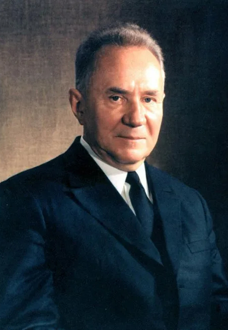

Алексей Косыгин
1904-1980
Биография
Алексей Николаевич Косыгин (1904–1980) — советский государственный и партийный деятель. Он занимал пост председателя Совета министров СССР с 1964 по 1980 год и был одним из самых влиятельных советских политиков в середине 1960-х годов наряду с генеральным секретарём Леонидом Брежневым.
В ходе его экономической реформы в 1965—1970 годах, была расширена самостоятельность предприятий, которым предоставлялась возможность распоряжаться прибылью и предусматривались механизмы материального стимулирования производителей в результатах и качестве труда.
В результате объём промышленного производства вырос примерно на 50%. Однако большинство его экономических инициатив были позднее свёрнуты из-за сопротивления партийной бюрократии.
Основные достижения
- Экономическая реформа (1965 – 1970-е, была свернута)
- Разработка планов для восьмой (1966), девятой (1971) и десятой (1976) пятилеток
- Экономические реформы (1973, не принята) и 1979 годов
- Расширение хозяйственной самостоятельности предприятий
- Создание системы материального стимулирования работников